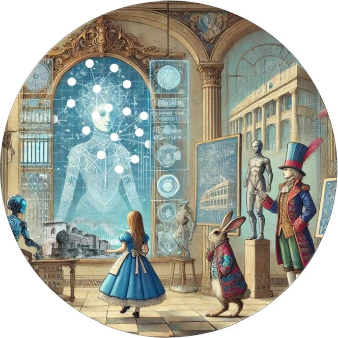

Computational and knowledge-modelling methods
in the assessment of built cultural heritage
Head: Assoc. Prof. Yael Alef · Established 2026

Significance assessment is the step that decides what a heritage place is worth protecting for. It rests on heterogeneous documentation: surveys, archaeological reports, planning files, historical sources. The lab treats the assessment as a knowledge-engineering problem: which knowledge about a place is worth capturing, how it should be modelled, and how documentation becomes governed, traceable claims about value, with a language model as a partner whose contribution stays visible and under expert control.
Our methods combine LLM pipelines with per-claim epistemic marking (what a source states, what is synthesised, what is hypothesised), expert review between stages, and a verified reference corpus used for evaluation and for comparing frontier models with locally run open-weight models.
An assistant for context-based significance assessment, run as a specification executed stage by stage by a language model, with expert review between stages. Every claim carries an epistemic mark. Implementations for three LLM platforms. Repository: github.com/InSites-Lab/insites.
A governed assessment session compared claim by claim against an expert assessment, with the full research record (specification as run, transcript, coding) published alongside the paper. Demonstration.
The assessment framework used by students outside conservation, in project-based learning around digital heritage storytelling.
Hands-on sessions in which heritage professionals run a governed significance assessment with InSites, in Israel in its Hebrew version, Atar.Bot. The aim is adoption of the approach, not only the tool. CAA 2026 workshop: programme · workshop site · materials.
Selected publications from the lab's line of work.
Head of the lab. Associate Professor, Architecture Track, Faculty of Architecture and Town Planning, Technion.
Ph.D., Bar-Ilan University (2021) · M.A. in Conservation, Raymond Lemaire Centre, KU Leuven (2002)
Formerly led national projects at the Israel Antiquities Authority's Conservation Department; Visiting Scholar, Getty Conservation Institute (2023).
Technion profile · ORCID
Blanca Rus, PhD student.
Research topic: Conserving Absence: Graded Testimony across the Spectrum of Synagogue Decline
Asuru Luherking P., Azrieli International Visiting PhD Fellowship, Fall 2026.
Research topic: Architectural heritage archives as active analytical systems for understanding and assessing cultural heritage risk
Open positions. The lab is recruiting doctoral and M.A. students. Enquiries to the address below.
We welcome researchers from any field, including heritage studies, architecture and engineering, digital humanities, and computer and information science, who are curious about cultural heritage.
Yael Alef · yaelalef@technion.ac.il
Segoe Building, Technion City, Haifa 3200003, Israel
insites-lab.github.io
The lab was established in 2026 with a Technion jump-start grant. This page is its current public entry point; a full site, with the growing portfolio of projects and publications, is in preparation.